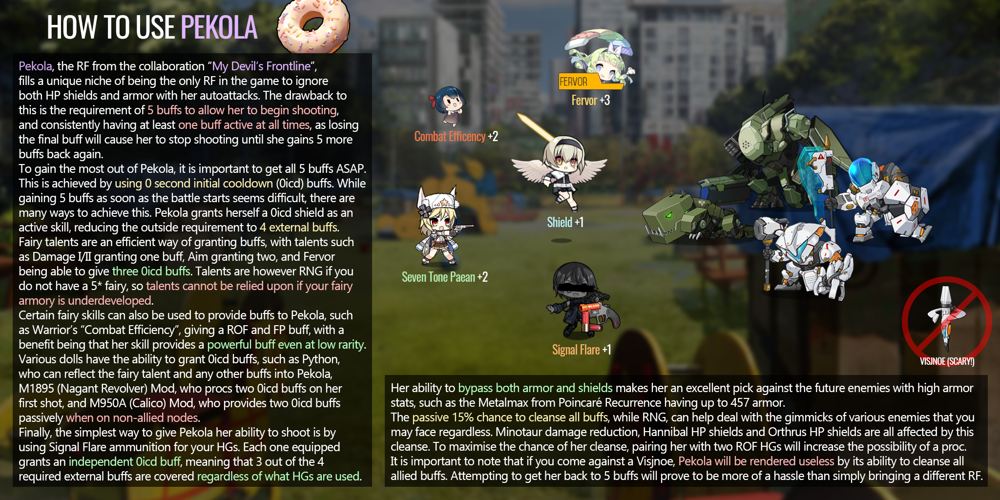

- General Liu
- Clones can get stat buffs, albeit with restrictions.
- C-93
- Passive can trigger in response to other dolls' self-debuffs.
- Hanyang Type 88
- Can still miss on certain positions.
- FX05
- Does not activate skill on max ROF.
- Supernova
- Additive crit rate.
- K2
- ROF around 90 to maximize the ICD up to 100 if there's a run-up to auto her skill.
- Sterling
- M3, PPSh-41 (+MOD), PP-2000, PPS-43, Sten MKII, EVO 3, PP-19 (+MOD), Sterling
- M4 SOPMOD II
- M4 interaction still borked (by u/UnironicWeeaboo).
- Ribeyrolles
- MOD skill do not count for AS Val's MOD skill, most likely due to buff counting as a "unit".
- LTLX
- Skill knocks back bosses.
- M4A1
- Main shot cannot crit. Explosion does.
- KSVK
- Main shot is normal shot, explosion coded as explosion.
- SAA
- MOD skill can "proc" after the first three.
- Pekola
- 
- M1897 Mod
- Flechette Storm!
- P90
- Galil Mod
- Reddit discussion.
- NTW MOD
- Second skill kicks in as long as the kill check is satisfied.
- Px4
- Buffs crit damage of surecrits and 100% crit is still 100% crit.
- PPK Mod
- Reddit breakdown.
- Colt Walker
- ROF debuff is instantly applied after being cleansed.
- Prevents application of multiplicative and overriding in-battle ROF buffs.
- ST AR-15
- Clones dying count towards the set skill.
- Viable units: T64 3set, P90 skill
- HK 416
- Black Cat skin shot timing differences.